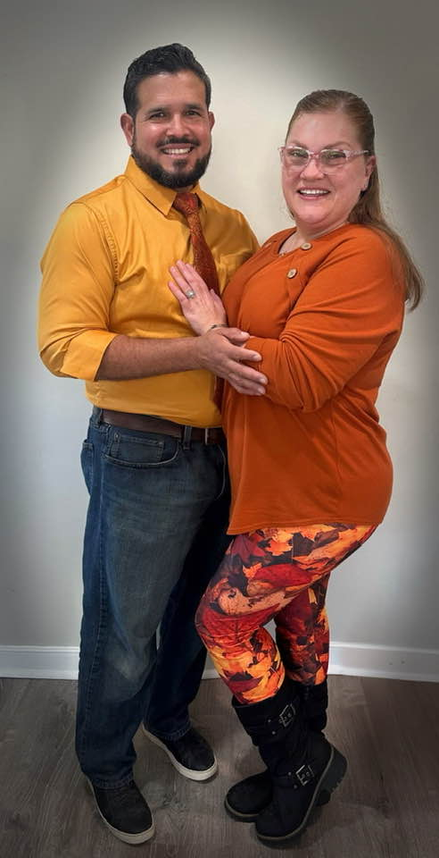

| Miguel & Bonnie |  | We are a pair of Army veterans who met in Germany in 2008. We have been together ever since. Bonnie is on the journey to finish her AAS in webdesign with a graphic specialty, and Miguel Works in the Federal prison system after he retired from 21 years in the Army! Life hasn't been boring for us and we hope it never is! we are the proud parents of boy/girl twins named Lilliana & Leonardo! |
| Lilliana & Leonardo |  |
Lilli and Leo are newly joining the homeschooling world! They both have higher education dreams and want to pursue a degree in vetrinary care and medical research sciences! Along with their acidemics they also have extracurricular activities like Clogging, Ballet and Tap dancing, just to name a few. |
| Gramma Beth | Bonnie's Mother, "Gramma Beth" lives with us on our farm. She is amazing at just about anything you can think of. She also has a wealth of knowledge that she brings to our farm. We love having her here! |